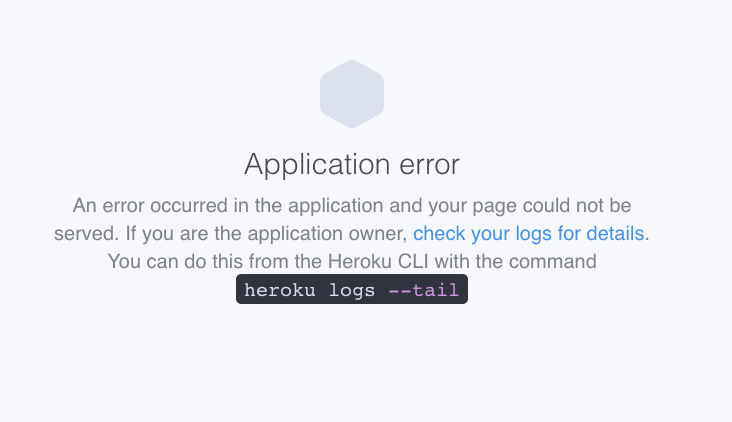
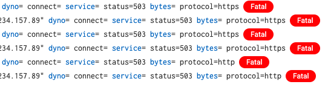

Everything was running fine locally, I was able to get wagtail's CMS up and running from their tutorials.
Once I was convinced that I had all the components of wagtail's cms intact (uploading images, templates looking nice, blog index page figured out) I attempted to move everything up to my staging environment. It was semi-catastrophic. (Which BTW is why I love having this testing environment)
The first error I received when I pushed everything to my staging server was the heroku "application error" page:

was telling me:
ModuleNotFoundError: No module named 'wagtail' Exception
I was really scratching my head over this one. I clearly had the wagtail module installed on my local environment because I was working fine with it, updating posts and everything. Turns out I neglected to download a package called:
django-toolbelt, which will properly install all the packages required for running a django project on heroku.
I then attempted to load my page, and was presented with:
Server Error (500)
That's it, nothing else on the page.
I took this in an exercise to get better at diagnostics. I realized that I am not anywhere close to being able indentify hints to see where the issues lie. At this point, I wasn't even sure where to look.
I learned two ways to diagnose errors.
-
The first was using logentries through my heroku account. This, however, yeilded the same information:
 The same 500's errors that don't tell me anything at all!
-
Turning on DEBUG=TRUE in my settings.py (duh)
I realize that I messed with this setting for so long, adding a secret key and whatever, but completely forgot that this was an option. This one yeilded me the most information because django really goes into line by line details for the errors, which was described as:
ProgrammingError relation "wagtailcore_site" does not exist
This one I had to dive deep because I'm still learning the ropes here. When I saw the word 'relation' I knew it had to be my database. I decided to go back and explore my settings.py file, and saw that I still had my SQLite3 database installed. 🤦🏻♀️
I've messed up this site before. Past the point of no return, and rebuilt it from the ground up. In doing so, I thought that I had changed my database over to something else, anything else other SQLite3, but apparently I forgot that step. It probably didn't make a difference though because I was not storing anything in the database yet, nor was it launched to my production server.
So, I migrated what little data I had created with my blog information into a postgreSQL database. It was much more straightforward than I thought it would be. I just followed these instructions:
How to migrate Django from SQLite to postgreSQL
but I had to add one step due to an error that my database had foreign key contraints:
TRUNCATE django_content_type CASCADE;
and while this seemed to move everyting perfectly to a new postgreSQL database beautifully and I was able to see all my posts locally, my staging server was still giving me errors.
This part is what took me the longest, but is perhaps the most important thing I learned during this process:
how to run bash on my staging servers!
Honestly, something I was unaware that I could do but game changing. It just puts everything in perspective for me: the virtual environment, and how heroku imitates this environment to serve my application that I built. So in essense, everyting that I was doing here locally, would have to be done identically on their server to get the same results. I finally understood what "ProgrammingError relation "wagtailcore_site" does not exist" meant. Heroku can't find my database/data!
This post on migrating using bash on the hosting servers really was a 💡.
I was able to execute the same commands I did locally, installing the database and migrating the data for my staging server. And it works. I now have a cms functioning for my site, held together with hope and duct tape.
Resources:
Coding for Everybody's How to deploy Wagtail using Heroku
Wagtails' blog post on heroku deployment